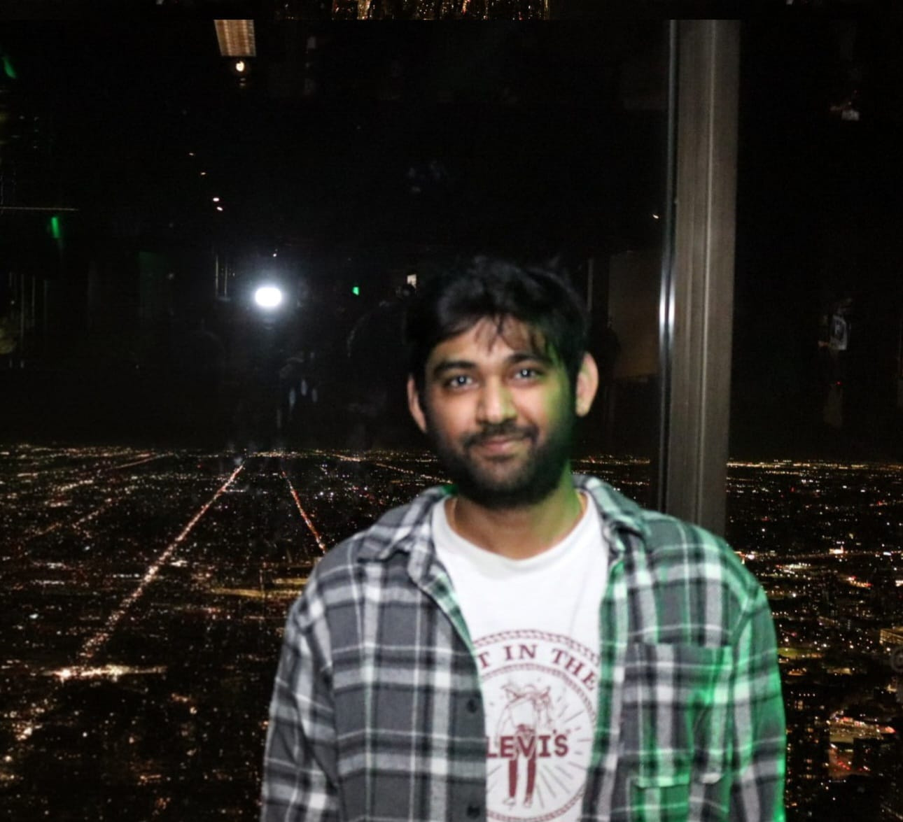

Bharat Yalavarthi
I make interpretability actionable — turning what we can read off a model’s internals into concrete fixes for its failures.
PhD Student, Department of Computer Science
University at Buffalo, SUNY
I work on mechanistic interpretability — sparse autoencoders, feature attribution, and probing — advised by Dr. Nalini Ratha and Dr. Venu Govindaraju. My focus is on using interpretability as a tool rather than an end in itself: isolating the internal features that drive a model’s failure modes, then intervening on them directly to improve robustness, safety, and fairness — without labels, retraining, or extra data.
Currently seeking research internships in interpretability and AI safety (Fall 2026 onward).
Selected Projects
DIAL
ICLR 2026
A fully zero-shot, label-free method that uses sparse autoencoders to isolate spurious feature directions inside VLM embeddings and remove them by orthogonal projection. Improves worst-group accuracy across five benchmarks with no training, labels, or auxiliary data.
SAE Concept Formation Across Scale
In progress
Probing how concepts organize in SAE latents across Gemma Scope model scales. Scaling appears to yield fractal compositional expansion rather than convergence to atomic features; narrow models collapse high-frequency concepts into coarse superpositions.
Publications
Full list on Google Scholar.
Interpretability & Safety
- Label-Free Mitigation of Spurious Correlations in VLMs Using Sparse Autoencoders ICLR 2026 — International Conference on Learning Representations
- Aligning Characteristic Descriptors with Images for Human-Expert-like Explainability NeurIPS 2024 Workshop on Interpretable AI
Privacy & Secure ML
- Shielding Latent Face Representations From Privacy Attacks IEEE FG 2025 — International Conference on Automatic Face and Gesture Recognition
- Enhancing Privacy in Face Analytics Using Fully Homomorphic Encryption IEEE FG 2024 — International Conference on Automatic Face and Gesture Recognition
- Efficient Convolution Operator in FHE Using Summed Area Table ICPR 2024 — International Conference on Pattern Recognition
Experience
-
PhD Student Jan 2025 – PresentUniversity at Buffalo, SUNY
Mechanistic interpretability of vision-language and language models. SAE-based mitigation of spurious correlations (ICLR 2026); entropy regularization for concept bottleneck models; probing SAE concept formation across Gemma Scope scales.
-
Researcher Aug 2024 – Jan 2025SUNY Research Foundation, Buffalo, NY
Built a Gestalt-grounded benchmark (1,200+ stimuli, 4 perceptual principles) exposing systematic visual reasoning failures in frontier MLLMs that standard VQA benchmarks miss. Stress-tested vision encoders to isolate where perception, not language, breaks down.
-
Research Assistant Jan 2023 – May 2024SUNY Research Foundation, Buffalo, NY
Human-expert-like explanations for face and medical predictions using Mistral-7B and CLIP (NeurIPS-W 2024). FHE-based privacy solutions for biometric systems, cutting attribute leakage by 35% with no accuracy loss.
-
Software Engineer — ADAS & Navigation Oct 2020 – Jul 2022Harman International (Samsung)
Delivered 20+ ADAS and route guidance features for VW Trucks/Coaches; modular redesign cut software maintenance costs by 25%. Integrated an onboard traffic sign recognition module, reducing incorrect sign events by 90%.
Education
-
Ph.D. in Computer Science 2025 – PresentUniversity at Buffalo, SUNY — UB Presidential Fellowship
Advisors: Dr. Nalini Ratha & Dr. Venu Govindaraju
-
M.S. in Computer Science 2022 – 2024University at Buffalo, SUNY
-
B.Tech. in Computer Science 2016 – 2020Vellore Institute of Technology (VIT)
Contact
I'm looking for research internships in interpretability and AI safety, and I'm always happy to talk about SAEs, feature attribution, or model failure modes.
Email: bharatcy2@gmail.com
CV: Download (PDF)